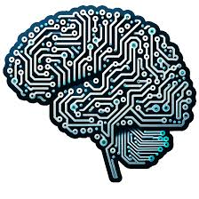

Machine Learning (Aprendizaje Automático)
Permite a los sistemas aprender y extraer patrones a partir de datos históricos sin ser programados explícitamente para cada regla.
Ejemplo: predecir si un correo es spam.
Especialidad de Programación — CBTIS 260
La IA no es una sola tecnología, sino un conjunto de disciplinas interconectadas que permiten a las máquinas procesar el mundo de distintas maneras.
Una forma sencilla de ordenarlas es como muñecas rusas: la IA es la muñeca más grande, dentro de ella está el Machine Learning y dentro de este vive el Deep Learning, que se basa en redes neuronales artificiales.

Permite a los sistemas aprender y extraer patrones a partir de datos históricos sin ser programados explícitamente para cada regla.
Ejemplo: predecir si un correo es spam.
Utiliza redes neuronales de múltiples capas para procesar información muy compleja, como voz, imágenes y texto sin estructurar.
Ejemplo: convertir tu voz en texto.
Se encarga de que las computadoras entiendan, interpreten y generen lenguaje humano hablado y escrito.
Ejemplo: los chatbots y los traductores automáticos.
Capacita a los sistemas para analizar, interpretar y comprender información visual a partir de imágenes digitales y videos.
Ejemplo: detectar rostros o leer placas de autos.
Además de las cuatro principales, la IA se combina con otras áreas: